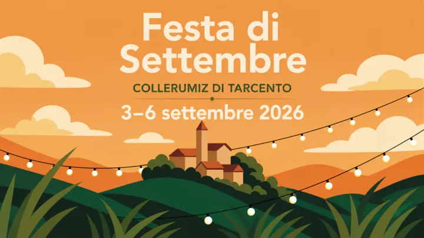

Friuli
da ven 4 set a dom 6 set · dalle 18:00
Festa di Settembre a Collerumiz
Chioschi, specialita friulane, musica e domenica la 38a Marcialonga. L'area della festa e coperta.
 Indicazioni
Indicazioni
- Costi e prenotazioni
- Ingresso libero · Marcialonga €5 · Iscrizione sul posto per la Marcialonga
- Programma
- Programma confermato. Il programma del weekend è pubblicato. La pagina comunale contiene il refuso “domenica 10” per la Marcialonga; la locandina e il programma riportano domenica 6.
- In caso di maltempo
- L’area della festa è coperta.
- Note
- Area della festa coperta.
L’EVENTO
Descrizione completa
La festa tradizionale di Collerumiz riunisce cucina friulana, ballo, musica dal vivo e la Marcialonga domenicale negli spazi coperti accanto alla chiesa. Chioschi, cucina, pesca di beneficenza e lotteria accompagnano tutto il fine settimana.
Area della festa coperta. Cucina domenica 11:00–14:00 e 18:00–23:00; nelle altre serate chiude alle 23:00.
IL PROGRAMMA
Programma e orari
Appuntamenti raccolti dalle fonti elencate. Dove manca un orario, non è ancora disponibile in questa scheda.
Venerdì 4 settembre
- 18:00 · Apertura chioschi
- 19:00 · DJ Gaby Sanchez
- 21:30 · Serata latina
Sabato 5 settembre
- 16:00 · Ritrovo degli Scampanotadôrs
- 18:00 · Apertura dell’area festeggiamenti
- 19:00 · DJ Damore
- 21:30 · Concerto degli Absolute 5
Domenica 6 settembre
- 08:00–10:00 · Iscrizioni alla 38ª Marcialonga
- 08:30–10:00 · Partenza libera della marcia
- 11:30–12:30 · Pasta party e premiazioni
- 18:00 · Camillo e i Cooperativi
- 20:00 · René e la sua orchestra
- 22:30 · Estrazione della lotteria
INFORMAZIONI UTILI
Prima di partire
- Area della festa coperta.
- Cucina domenica 11:00–14:00 e 18:00–23:00; nelle altre serate chiude alle 23:00.
ORGANIZZAZIONE